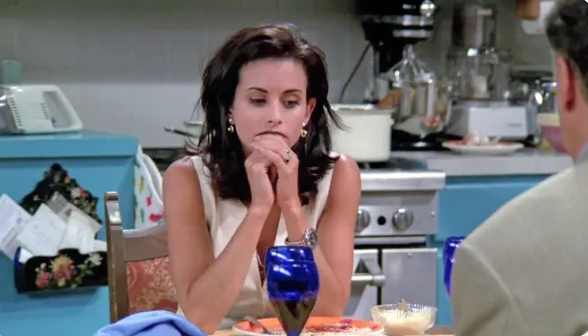
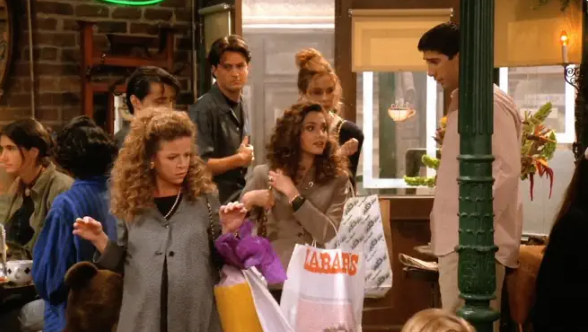
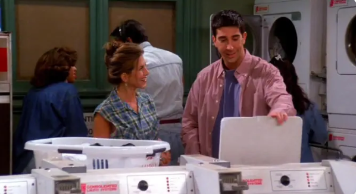

六人行
95%
1994
喜劇
EP1 摩妮卡有新室友
蕾秋在婚禮當天前離開未婚夫，搬進去和摩妮卡同住，卻發現沒老爸的信用卡借後盾，自力更生其實比想像中困難。
EP1
摩妮卡有新室友
20 分蕾秋在婚禮當天前離開未婚夫，搬進去和摩妮卡同住，卻發現沒老爸的信用卡當後盾，自力更生其實比想像中困難。

EP2
以超音波檢查作結
20 分羅斯的女同志前妻懷了她的小孩，羅斯卻不喜歡她給小孩取的姓。
EP3
拇指
20 分菲碧在汽水罐裡發現一隻斷指，於是得到汽水公司給的七千元賠償，錢德勒的菸癮又犯了，惹得眾人不開心。

EP4
喬治史蒂芬羅伯斯
20 分女孩們發現白宮前顧問喬治史蒂芬羅伯斯就住在對街，決定用望遠鏡一探究竟。

EP5
東德國洗衣粉
20 分羅斯幫蕾秋洗衣服，並且認為這就是兩人的約會初體驗。喬伊要摩妮卡擔任他的新女友。
EP6
屁股
19 分喬伊受雇擔任艾爾帕西諾的臀部替身，可謂從天而降的契機。
EP7
停電
20 分菲碧正要在中央咖啡廳演唱悲情民歌時，紐約突然發生大地震。